Earned Value Management (EVM) is a project management technique used to measure project performance and progress in an objective manner. It integrates project scope, time (schedule), and cost parameters to provide accurate forecasts of project performance issues.
Key Components
- Budget at Completion (BAC): The total budget for the project.
- Actual Cost (AC): The actual cost incurred for the work performed on an activity during a specific time period.
- Planned Value (PV): The authorized budget assigned to scheduled work.
- Earned Value (EV): The value of work actually performed expressed in terms of the approved budget for that work.
Common EVM Equations
-
Cost Variance (CV): Positive CV indicates under budget and negative CV indicates over budget.
-
Schedule Variance (SV): Positive SV indicates ahead of schedule and negative SV indicates behind schedule.
-
Cost Performance Index (CPI): CPI > 1 indicates cost efficiency and CPI < 1 indicates cost inefficiency.
-
Schedule Performance Index (SPI): SPI > 1 indicates schedule efficiency and SPI < 1 indicates schedule inefficiency.
-
Estimate at Completion (EAC):
Examples
First, load the package:
Then set the BAC, schedule, and current time period for a toy project.
bac <- 100000
schedule <- c(0.1, 0.2, 0.4, 0.7, 1.0)
time_period <- 3Calculate the PV and print the results:
Planned Value (PV): 40000
Set the actual % complete and calculate the EV:
Earned Value (EV): 35000
Set the actual costs and current time period and calculate the AC to date:
actual_costs <- c(9000, 18000, 36000)
ac <- ac(actual_costs, time_period)
cat("Actual Cost (AC):", ac, "\n")Actual Cost (AC): 36000
Calculate the SV and CV and print the results:
sv <- sv(ev, pv)
cat("The project is behind schedule because the Schedule Variance (SV) is", sv, "\n")The project is behind schedule because the Schedule Variance (SV) is -5000
The project is over budget because the Cost Variance (CV) is -1000
Calculate the SPI and CPI and print the results:
spi <- spi(ev, pv)
cat("The project is behind schedule because the Schedule Performance Index (SPI) is", round(spi, 2), "\n")The project is behind schedule because the Schedule Performance Index (SPI) is 0.88
cpi <- cpi(ev, ac)
cat("The project is over budget because the Cost Performance Index (CPI) is", round(cpi, 2), "\n")The project is over budget because the Cost Performance Index (CPI) is 0.97
Calculate the EAC and print the results:
The Estimate at Completion (EAC) is 102857.1
Finally, create a performance trend and plot the results:
# Calculate PV, AC, and EV for time periods 1 to 3
time_period <- c(1, 2, 3)
actual_per_complete <- c(0.05, 0.15, 0.35)
pv <- sapply(1:3, function(t) pv(bac, schedule, t))
ac <- actual_costs
ev <- ev(bac, actual_per_complete)
# Create a data frame for easier plotting
data <- data.frame(
time_period,
PV = pv,
AC = ac,
EV = ev
)
# Plot PV, AC, and EV over time
p <- ggplot2::ggplot(data, ggplot2::aes(x = time_period)) +
ggplot2::geom_line(ggplot2::aes(y = PV, color = 'PV'), size = 1) +
ggplot2::geom_line(ggplot2::aes(y = AC, color = 'AC'), size = 1) +
ggplot2::geom_line(ggplot2::aes(y = EV, color = 'EV'), size = 1) +
ggplot2::geom_hline(yintercept = bac, linetype = 'dashed', color = 'blue', size = 1, show.legend = TRUE) +
ggplot2::geom_hline(yintercept = eac, linetype = 'dotted', color = 'red', size = 1, show.legend = TRUE) +
ggplot2::labs(title = 'Earned Value',
x = 'Time Period',
y = 'Value',
color = 'Metric') +
ggplot2::xlim(1, 5) +
ggplot2::theme_minimal()
# Print the plot
print(p)